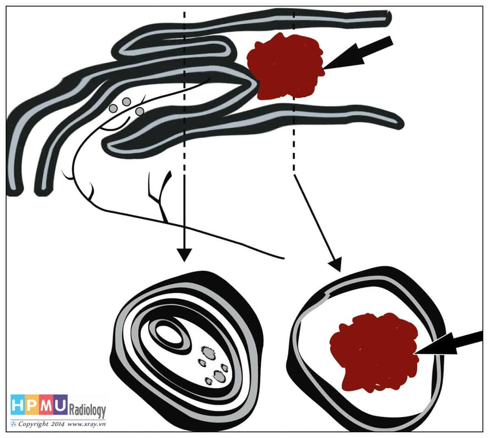
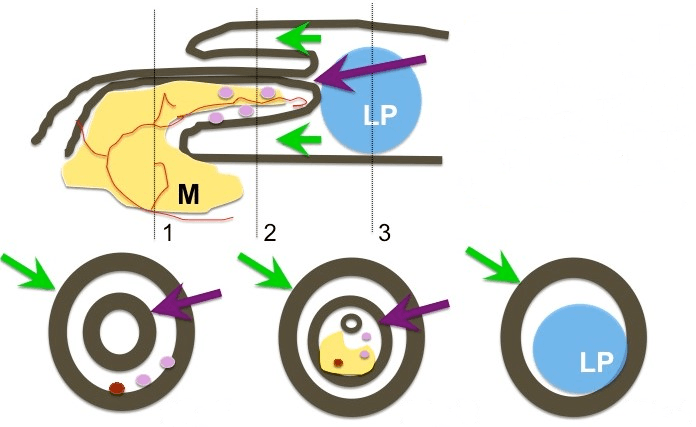

Lồng Ruột
Nguồn: Xray.vn — xray.vn/long-ruot
I. Đại cương
– Lồng ruột (Intussusception) là một cấp cứu bụng ngoại khoa thường gặp, do một đoạn ruột lộn lại và chui vào lòng của đoạn ruột kế cận, là nguyên nhân của tắc ruột cơ học mà cơ chế vừa do bít vừa do thắt.
– Lồng ruột có thể gặp ở bất cứ lứa tuổi nào, nhưng thường gặp ở trẻ dưới 2 tuổi (chiếm tới 80% các trường hợp lồng ruột), trong đó gặp nhiều nhất là ở lứa tuổi 4-9 tháng.
– Lồng ruột gặp ở bé trai nhiều hơn bé gái từ 2-4 lần.
– Bệnh ít gặp ở trẻ suy dinh dưỡng, đa số gặp ở trẻ béo tốt, bụ bẫm…
– Thường gặp mùa đông xuân, thường sau ỉa chảy, viêm đường hô hấp.
– Tần suất lồng ruột tái phát 10% sau tháo lồng, thường sau 48-72 giờ.


* Nguyên nhân
– Trẻ em: 90% là vô căn, có thể liên quan liên quan đến hạch bạch huyết phì đại sau nhiễm trùng.
– Trẻ sơ sinh và người lớn
– Nguyên nhân được xác định ở 90% trường hợp người lớn (thường gặp u ác tính ở ruột già và lành tính ở ruột non).
– Khối u ác tính đường tiêu hóa: ung thư biểu mô đại tràng, di căn, lymphoma ruột non.
– Khối u lành tính: GIST, polyp ruột, u mỡ, u máu, u nhầy ruột thừa.
– Bẩm sinh: túi thừa Meckel, nang ruột đôi, tụy lạc chỗ.
– Viêm ruột
– Chấn thương tụ máu thành ruột.
* Phân loại
– Hình thái lồng ruột được xác định bởi điểm khởi đầu của lồng ruột và vị trí ruột bị lồng.
– Lồng ruột hồi – đại tràng (ileocolic – 75%): điểm khởi đầu là đoạn cuối của hồi tràng, sau đó hồi tràng chui vào đại tràng. Van Bauhin ở nguyên tại chỗ (lồng ruột xuyên van), hoặc tạo nên đầu của khối lồng (lồng ruột hồi – manh – đại tràng).
– Lồng ruột hồi – hồi tràng đơn thuần: ít gặp (15%).
– Lồng ruột đại – đại tràng: rất ít gặp (< 10%).
– Lồng ruột thừa vào manh tràng: rất hiếm gặp.
– Lồng ruột phức tạp: là sự kết hợp của các thể đã nêu trên.
© Chẩn Đoán Hình Ảnh Xray.vn
II. Chẩn đoán siêu âm
* Giải phẫu thành ruột


* Trên mặt cắt ngang


– Trên mặt cắt ngang của siêu âm, khối lồng có hình thái rất thay đổi, chủ yếu do lượng mạc treo bị cuốn theo. Mạc treo bị cuốn theo không có ở đỉnh của khối lồng và tăng dần hướng tới đáy khối lồng (cổ). Ngược lại, lớp quặt ra của đoạn ruột bị lồng dày ở đỉnh hơn ở đáy.
– Lớp cắt ngang của siêu âm ở đỉnh cho thấy một vòng ngoài giảm âm với trung tâm giảm âm.
– Trong một số trường hợp, hình thái nhiều vòng đồng tâm có thể thấy ở gần đỉnh (Dấu hiệu bia bắn – target sign). Khi khảo sát siêu âm hướng tới đáy khối lồng, hình thái thay đổi dần do tăng lượng mạc treo ở trung tâm.
– Ở đáy khối lồng, kích thước của mạc treo lớn nhất; kết quả là một vòng ngoài giảm âm, trung tâm tăng âm hình liềm (the crescent-in-doughnut sign). Đường kính ngang khối lồng từ 2-4.5cm.


=> Case lâm sàng 1:


=> Case lâm sàng 2:


=> Case lâm sàng 3:


=> Case lâm sàng 4:


=> Case lâm sàng 5:


=> Case lâm sàng 6:


=> Case lâm sàng 7:


* Trên mặt cắt dọc
– Trên mặt cắt dọc của siêu âm, sự sắp xếp của mạc treo có thể thấy ở một hoặc cả hai phía lớp trung tâm của đoạn ruột bị lồng. Nếu đoạn giữa của khối lồng được ghi ảnh trên mặt cắt dọc, người ta thấy 3 dải giảm âm song song bị phân cách bởi 2 dải tăng âm. Dải giảm âm ngoài tương ứng với lớp quặt ra bị phù của đoạn ruột bị lồng và đoạn ruột nhận lồng có thành mỏng; dải giảm âm trung tâm là lớp trung tâm của đoạn ruột bị lồng. Dải tăng âm do mạc treo bị kéo theo quai ruột. Hình thái này được gọi là dấu hiệu bánh kẹp (sandwich sign).


=> Case lâm sàng 1:


– Dấu hiệu cái chĩa cỏ (fork sign): là một biến thể của sandwich sign được thấy ở đỉnh của khối lồng. Dấu hiệu cái chĩa cỏ gồm có ba vùng giảm âm song song nhau (các ngạnh của cái chĩa cỏ) tương ứng với các dải giảm âm trong sandwich sign. Các ngạnh được phân cách bởi hai dải tăng âm của mạc treo. Các ngạnh nối ở đỉnh nơi đoạn ruột bị lồng gập lại.


– Dấu hiệu giả thận (Pseudokidney): dấu hiệu giả thận đề cập đến hình ảnh siêu âm theo chiều dọc của đoạn ruột bị lồng giống như một quả thận. Mạc treo chứa chất béo được kéo vào khối lồng ruột, chứa các mạch máu tăng âm giống như rốn thận, nhu mô thận là thành ruột phù nề.


* Siêu âm doppler
– Siêu âm Doppler xác định tình trạng mạch máu có thể tiên lượng cho điều trị, lồng gây thắt nghẹt không thấy mạch máu nuôi dưỡng thường có chỉ định mổ cấp cứu.

=> Case lâm sàng 1:


=> Case lâm sàng 2:


* Các dấu hiệu khác
– Quai ruột phía trên giãn
– Dịch tự do ổ bụng
– Đánh giá nguyên nhân: viêm hạch mạc treo, viêm ruột, khối u…


=> Case lâm sàng 1: tắc ruột do lồng


=> Case lâm sàng 2: dịch ổ bụng – hạch mạc treo / lồng ruột


=> Case lâm sàng 3:


=> Video siêu âm lồng ruột:
III. Chẩn đoán x-quang
* Phim chụp bụng
– Khối thường thấy ở 1/4 trên phải ổ bụng phủ trước thận phải.
– Không thấy rõ hình ảnh khí trong đại tràng lên, manh tràng. Sự ngắt quãng đột ngột của khí trong đại tràng do khối lồng => dấu hiệu “cắt cụt đại tràng”.


– Dấu hiệu bia bắn (target sign): có thể thấy trong 24% trường hợp. Hình ảnh bóng mờ của khối lồng, gồm 2 vòng tròn đồng tâm hoặc các viền đồng tâm sáng, chúng do mỡ mạc treo của khối lồng tạo nên. Thường thấy ở một phần tư trên phải ổ bụng xoá bờ gan liền kề.


– Dấu hiệu mặt khum (meniscus sign – hình thấu kính): bao gồm một liềm khí bên trong lòng đại tràng viền quanh đỉnh của khối lồng.


– Hố chậu phải rỗng do manh tràng di lệch, không thấy khí trong đại tràng từ vị trí khối lồng.


=> Case lâm sàng 1:


=> Case lâm sàng 2:


=> Case lâm sàng 3:
– Hình ảnh quai ruột giãn, mức nước-hơi giai đoạn muộn.


* Chụp khung đại tràng
– Ở trẻ em: chụp khung đại tràng bơm hơi có hai mục đích chẩn đoán và điều trị
– Ở người lớn: chụp khung đại tràng cản quang baryte hoặc cản quang tan trong nước. Thuốc dừng lại ở vị trí lồng có hình càng cua hoặc đáy chén.
– Dấu hiệu lò xo (coiled spring) được tạo ra khi các nếp niêm mạc phù ở lớp quặt ra của phần ruột bị lồng được phủ bởi chất cản quang trong lòng đại tràng.


– Dấu hiệu mặt khum (meniscus sign – hình thấu kính), tương tự với dấu hiệu mặt khum trong phim X quang thường qui và được tạo ra bởi đỉnh tròn của phần ruột bị lồng (intussusceptum) lồi vào cột thuốc cản quang.


=> Case lâm sàng 1: tháo lồng


=> Case lâm sàng 2: tháo lồng


=> Case lâm sàng 3: tháo lồng


=> Case lâm sàng 4: tháo lồng


=> Case lâm sàng 5: tháo lồng


IV. Chẩn đoán CLVT
– Cấu trúc ống tiêu hóa lồng vào nhau tạo hình ảnh bia bắn và bán Sanwich tương tự trên siêu âm.
– Tỷ trọng mỡ mạc treo và mạch mạc treo trong khối lồng.


=> Case lâm sàng 1:


=> Case lâm sàng 2:


=> Case lâm sàng 3:


=> Case lâm sàng 4:


=> Case lâm sàng 5:


=> Case lâm sàng 6:


=> Case lâm sàng 7:


– Phát hiện nguyên nhân gây lồng ruột: viêm, polyp, khối u, túi thừa meckel…


=> Case lâm sàng 1: lồng ruột do u


=> Case lâm sàng 2: lồng ruột do u mỡ


=> Case lâm sàng 3: lồng ruột do u


=> Case lâm sàng 4: lồng ruột do u


=> Case lâm sàng 5: lồng ruột do u


=> Case lâm sàng 6: lồng ruột do u lymphoma


V. Phân biệt
* Van hồi manh tràng
– Van hồi manh tràng (Ileocecal valve) có thể được chẩn đoán nhầm với một lồng ruột vị trí hồi manh tràng.

=> Case lâm sàng 1:
* Lồng ruột thoáng qua
– Lồng ruột thoáng qua (Transient intussusception) tức là khối lồng không gây tắc ruột, thường tự tháog.
– Thường lồng trên 1 đoạn ngắn, gặp lồng hỗng tràng – hỗng tràng.
– Đặc điểm hình ảnh:
+ Đường kính búi lồng nhỏ < 2cm.
+ Còn thấy nhu động ruột trong búi lồng.
+ Không thấy nguyên nhân gây lồng ruột
+ Doppler: còn thấy tưới máu trên búi lồng.
+ Không thấy hình ảnh khối lồng khi đánh giá lại.

=> Case lâm sàng 1:


Tài liệu tham khảo
* Intussusception in Children: Current Concepts in Diagnosis and Enema Reduction – Gloria del-Pozo, MD
* Adult Intestinal Intussusception: CT Appearances and Identification of a Causative Lead Point – Young H. Kim, MD, Michael A. Blake, FFR(RCSI), FRCR, Mukesh G. Harisinghani, MD
* Can CT Features Be Used to Diagnose Surgical Adult Bowel Intussusceptions – Baskaran Sundaram, Carl N. Miller
* Paediatric Intussusceptions: What the general radiologist needs to know – J. James, M. Tapp, E. Morris; Torquay/UK
* Intestinal Intussusception: CT and Ultrasound appearances – D. Cardoso, D. Silva, A. C. Mota
* Adult intussusception: Is there a role for MDCT in predicting the degree of vascular compromise? A radiologic-pathologic correlation – P. Sedati, M. Telesca, F. Macrì
* Adult Intestinal Intussusception: Radiologic-Pathologic Correlation – C. Rubio Hervás, A. Verón Sánchez, A. Díez Tascón
* Intussusception; A to Z – S. W. Shin, Y. Kim, E. T. Kim
* Intussusception in adults: contribution of CT and ultrasound – C. Lozano Cejudo, M. L. Rozas Rodríguez, M. E. Banegas Illescas
* Intestinal intussusception in adults: X-ray, US, CT, and MRI findings – F. Sandomenico, O. Catalano, A. Nunziata, V. De Rosa, A. Petrillo, A. Siani; Naples/IT
* CT in adult intussusception: Radiologic-pathologic correlation – C. Triantopoulou, P. Maniatis, I. Siafas, N. Giannakou, C. Avgerinos, C. Dervenis, J. Papailiou; Athens/GR
* Adult intussusception: Imaging and causes- S. Baleato González, R. García Figueiras, C. Villalba Martín
* Colocolic intussusceptions in children: a pictorial essay and review of the literature Edward J Richer, Paula N Dickson
* Air Versus Barium for Pediatric Intussusception Reduction, what the radiologist needs to know – M. Del Río, S. E. Kettenhofen, O. Medellin Najera, R. D. Pichardo Palacios, M. A. Carrillo Martinez
* Practical Imaging Strategies for Intussusception in Children – : Domen Plut, Grace S. Phillips, Patrick R. Johnston